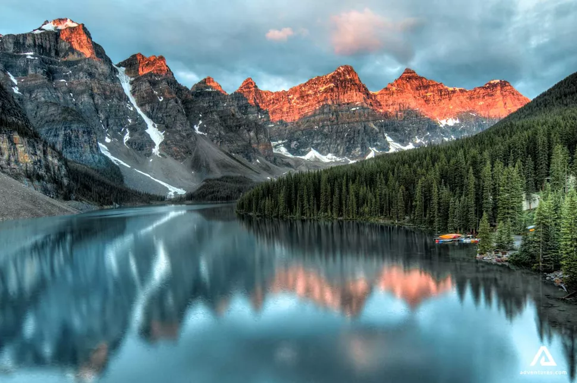

3 Base Camps
Aug 18 – 27, 2026 · Calgary Round Trip
BASE 01
Canmore, AB
Aug 18 – 21
3 NightsBanff town · Lake Minnewanka · Lake Louise · Moraine Lake
BASE 02
Golden / Field, BC
Aug 21 – 23
2 NightsYoho NP · Emerald Lake · Takakkaw Falls · Natural Bridge
BASE 03
Jasper, AB
Aug 23 – 27
4 NightsIcefields Parkway · Maligne Lake · Pyramid Lake · Athabasca Falls
The Route
Driving at a Glance
| Leg | Km | Est. Time | Highway |
|---|---|---|---|
| Calgary YYC → Canmore | 125 km | ~1.5 hr | Hwy 2 N → Trans-Canada Hwy 1 W |
| Canmore → Golden / Field | 130 km | 1.5–2.5 hr + stops | Hwy 1 W through Lake Louise and Kicking Horse Pass |
| Golden / Field → Jasper | 230–310 km | 4.5–5 hr + stops | Hwy 1 E → Icefields Parkway / Hwy 93 N |
| Jasper → Calgary YYC | ~410 km | ~5 hr + stops | Hwy 93 S → Hwy 1 E → Hwy 2 S |
| Total loop distance | ~900–1,000 km | ~12–14 hr | Excludes local sightseeing mileage |
Fly into Calgary YYC Morning
Collect luggage and pick up the SUV rental at YYC. This is now a round-trip rental, so confirm the Calgary return location and keep the reservation simple.
Calgary grocery stop ~30 min
Stock snacks, breakfast items, water, sunscreen, and trail food before heading west. Grocery options are easy in Canmore, but Calgary is the lowest-friction first stop.
Drive to Canmore Afternoon
Take Hwy 2 north, then Trans-Canada Hwy 1 west. The first big mountain reveal comes as the Bow Valley opens near Canmore.
Check in + Canmore dinner Evening
Settle into the first base. Walk Main Street, confirm shuttle and Pursuit reservations, and keep the first night easy.
Lake Louise Park & Ride Early morning
Drive to the Lake Louise Ski Resort Park & Ride and check in for your reserved Parks Canada shuttle. Use the connector to see both Lake Louise and Moraine Lake in one day.
Moraine Lake — Rockpile viewpoint Morning
Start with the Valley of Ten Peaks while light is clean and crowds are lower. Rockpile is the essential short walk; canoe rentals are optional if the line is reasonable.
Lake Louise lakeshore or Tea House hike Midday
For a lighter day, walk the lakeshore to Victoria Glacier views. For stronger hikers, Lake Agnes Tea House is the best upgrade.
Johnston Canyon on the return Late afternoon
If the group has energy, stop for the Lower and Upper Falls catwalk trail. If not, save Johnston Canyon as a flexible backup for Day 3.
Banff Gondola — Sulphur Mountain Morning · Pursuit Pass
Ride to the summit boardwalk for the cleanest panoramic view of the Bow Valley. Book a morning slot and leave time for parking or shuttle logistics.
Banff Avenue + Bow Falls Midday
Lunch in Banff, then walk to Bow Falls for an easy river viewpoint. This keeps the day scenic without overloading it after the lake day.
Lake Minnewanka Cruise or shoreline Afternoon · Pursuit Pass option
Use the cruise if it is part of your pass and schedule; otherwise the shoreline viewpoint and Two Jack Lake drive are worthwhile on their own.
Pack for Yoho / Golden Evening
Tomorrow crosses the Continental Divide. Confirm Golden or Field check-in and make sure fuel, snacks, and offline maps are set.
Scenic drive over Kicking Horse Pass Morning
Leave Canmore after breakfast and head west past Lake Louise into Yoho. The drive is short enough to make the transfer day feel like sightseeing, not a slog.
Spiral Tunnels viewpoint Quick stop
Classic railway engineering stop on the Trans-Canada. Worth a short pullout if visibility is good and timing is easy.
Natural Bridge + Emerald Lake Afternoon
Natural Bridge is a fast, high-value stop. Emerald Lake is the anchor: walk part of the shoreline, rent canoes if conditions are calm, and linger here.
Check into Golden / Field Evening
Golden gives more lodging and food options; Field is quieter and closer to Yoho. Either works as long as Day 5 stays local.
Takakkaw Falls Morning · seasonal road
One of the signature waterfall stops in the Rockies. The access road is seasonal and winding, so check current conditions before committing the morning.
Emerald Lake second pass or Iceline trail Midday
Keep the default easy: more Emerald Lake time, lunch, and short walks. If the group wants a serious hiking day, choose an Iceline segment instead.
Wapta Falls or Golden Skybridge Afternoon
Wapta Falls is the nature-forward pick. Golden Skybridge is the Pursuit-style paid attraction option if the group wants something structured.
Early night before Jasper transfer Evening
Tomorrow is the biggest scenery day of the trip. Fuel up, pack the car plan, and confirm Columbia Icefield reservation timing.
Bow Lake + Peyto Lake Morning
Return east to Lake Louise, then turn north onto the Icefields Parkway. Bow Lake is the first easy shoreline stop; Peyto Lake is the quick high-reward viewpoint.
Columbia Icefield Adventure + Skywalk Midday · Pursuit Pass
Time the reservation so the day does not get rushed. This is the best place to use the bigger-ticket Pursuit attraction on the transfer north.
Sunwapta Falls + Athabasca Falls Afternoon
Both are natural breaks on the final run into Jasper. If time gets tight, prioritize Athabasca Falls for the shortest, strongest stop.
Arrive Jasper, check in Evening
Settle into the longest base. Keep dinner simple and avoid scheduling another major activity after the Parkway day.
Aug 24 — Maligne Road
Medicine Lake viewpoint Morning
Drive Maligne Road slowly and watch for wildlife. Medicine Lake is the best low-effort stop before continuing to Maligne Lake.
Maligne Lake Cruise Book ahead · Pursuit Pass option
Use this as the anchor for the Jasper stay. Spirit Island is the postcard view, and the drive itself is part of the experience.
Jasper town dinner Evening
Keep the evening light after the longer lake road. Walk Connaught Drive and watch for elk around town.
Aug 25–26 — Flexible Jasper Days
Pyramid Lake + Patricia Lake Half day
Easy, beautiful, and close to town. Walk Pyramid Island, rent paddles if conditions are calm, or keep it as a recovery morning.
Jasper SkyTram or Miette Hot Springs Choose one
SkyTram is the view-focused option if running and included in your package. Miette is the softer recovery day if the group wants a break.
Athabasca River valley + stargazing Evening
Use clear nights for dark-sky viewing. Jasper is at its best when the itinerary leaves room for weather, wildlife, and slower moments.
Early departure from Jasper Morning
Treat this as a travel day with scenery, not a full sightseeing day. Start early enough to protect flight timing and rental return.
Icefields Parkway southbound stops Flexible
Use this direction for anything missed on Day 6: Waterfowl Lakes, Saskatchewan River Crossing, Bow Lake, or a second Peyto Lake stop.
Calgary airport return Per flight schedule
Return the SUV at YYC. For an evening flight, target Calgary with a generous buffer; summer rental returns and airport lines can still run long.
Quick Reference
Moraine Lake
Valley of Ten Peaks, accessed by shuttle or licensed operator. This is the most important reservation in the Banff portion.
Lake Louise
Pair the lakeshore with Moraine Lake, or upgrade to Lake Agnes Tea House if the group wants a moderate hike.
Emerald Lake
The Yoho anchor. Less urban than Banff, easier to linger, and a strong reason to keep the Golden / Field base.
Takakkaw Falls
High-impact waterfall stop in Yoho. Check seasonal road status before relying on it for the day.
Columbia Icefield
The best transfer-day anchor between Yoho and Jasper: glacier, Skywalk, and huge Icefields Parkway scenery.
Maligne Lake
Jasper's signature lake day. Book the cruise ahead and use Medicine Lake as the natural stop on the way.
Park Admission
Your dates fall inside Parks Canada's 2026 free-admission window, but shuttle tickets, paid parking, tours, and attraction reservations still need to be booked separately.
Pursuit Pass Coverage
Confirm the exact 2026 package. Likely candidates: Banff Gondola, Lake Minnewanka Cruise, Columbia Icefield, Maligne Lake Cruise, and Golden Skybridge.
Jasper Closures
Do not build the plan around Maligne Canyon or Edith Cavell for 2026. Parks Canada lists those areas closed while recovery work continues.
Pre-Trip Booking Checklist
Moraine Lake shuttle · Maligne Lake Cruise · Columbia Icefield · Banff Gondola · Lake Minnewanka Cruise · three lodging bases · YYC round-trip SUV.
August Weather + Packing
Warm days, cool nights, fast weather changes. Pack shell jackets, layers, sunscreen, water bottles, bug spray, and footwear that can handle wet trails.
Driving + Fuel Notes
Top off in Canmore, Golden, and Jasper. Keep offline maps for Yoho, Icefields Parkway, Maligne Road, and the Jasper-to-Calgary return.